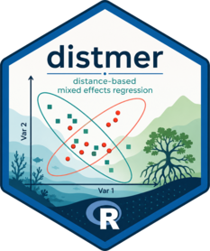

Asymmetric nested mixed PERMANOVA (unit + unit-by-subplot random strata)
Source:R/asymmetric-mixed.R
permanova_asymmetric_mixed.RdReproduces PRIMER's asymmetric nested mixed design with two random terms: a
unit nested in the crossed whole-plot factors, (1 | unit), and the unit by
sub-plot-factor interaction, (1 | unit:subplot). This gives three error
strata, all at the observation level (as in PRIMER, which permutes residuals
under a reduced model):
Arguments
- design
A compiled Design Object with two random terms: one
(1 | unit)main term and one(1 | unit:subplot)interaction term.- permutations
A non-negative integer or
"all".- seed
Optional random seed.
- hypothesis
Sum-of-squares partition for the fixed terms (
"I","II","III").- denominator
How each fixed term's denominator is chosen.
"ems"(default) derives the expected mean squares of the numerator and of every candidate stratum from the actual design, by the trace method, and matches them withquasi_denominator(). When the design is balanced this returns a single stratum and reproduces"stratum"exactly; when it is not, the correct denominator can be a combination of strata with Satterthwaite degrees of freedom, and the balanced rule is then wrong."stratum"forces the balanced rule: whole-plot terms over the unit stratum, sub-plot terms over the unit-by-sub-plot stratum.- whole_plot
How whole-plot terms are permuted when units are unequally replicated.
"auto"(default) keeps the intact-unit action at the observation level whenever any two units are exchangeable, and otherwise falls back to equally weighted unit centroids so a p-value exists at all."observation"and"centroid"force either. The two agree exactly for equally replicated units and target different estimands otherwise; the choice made is reported on the fit.- keep_permutations
Retain permutation statistics on each test spec.
- max_exact
Maximum permutation space allowed for exact enumeration.
- tol
Numerical tolerance.
Details
IS(unit) = between-unit variation after the whole-plot fixed terms – the denominator for the whole-plot fixed effects (those not involving the sub-plot factor);
subplot x IS(unit) = the unit-by-sub-plot interaction – the denominator for the sub-plot fixed effects (those involving the sub-plot factor);
Residual = within unit-by-sub-plot cells – the denominator for both random strata.
Degrees of freedom are derived from the actual (possibly incomplete) design,
so units missing a sub-plot level are handled. For the Caribbean benthos
example this is bray ~ DEPTH * ECOREGION * POP_STATUS + (1 | ISLAND) + (1 | ISLAND:DEPTH), giving IS(EC x PS) and DE x IS(EC x PS).